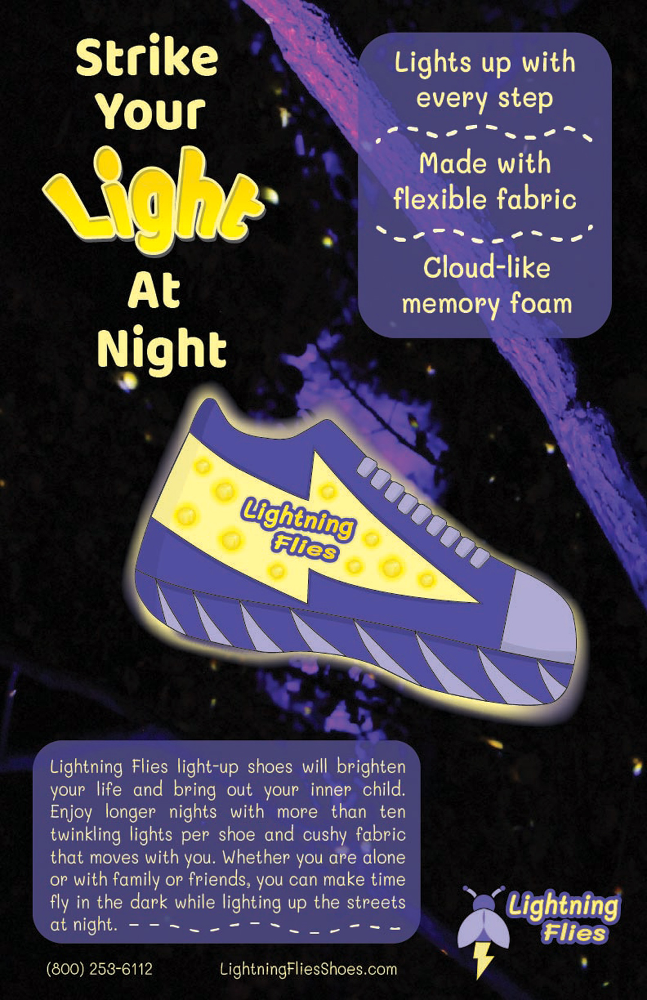

Lightning Flies Light-Up Shoes Advertisement Poster, Product Advertisement for Digital Art and Design at North Central College, Created in Illustrator, First came up with the logo and the product which then evolved into this poster to promote these made-up shoes. I took the background image and focused on creating contrast through the use of complimentary colors and the size of the text.